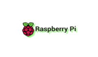

About Me
I am a passionate amateur photographer and computer enthusiast, dedicated to exploring the intersection of visual art and technology.
With a keen interest in programming and AI, I am constantly learning and experimenting with new tools and techniques.
My journey with the Raspberry Pi has opened up exciting opportunities to innovate and create unique projects.
I am committed to developing my skills in cybersecurity and web development, using platforms like Kali Linux and VS Code to stay at the forefront of the industry.

 << Click for a RaspberryPi
I'm looking to develop skills in all things Cyber, including security
and web development. I have a Kali Linux setup for security learning
and i have the RaspberryPi Desktop for web development.
I'm using VS Code as my workspace and curious about what's going on in
the industry.

PROJECTS
Project 1
This website was built by me and my trusty AI assistant. I
conceptualized the design and layout, while the AI assistant helped
with the coding and implementation of various features.
Together, we were able to create a professional and visually appealing
portfolio that showcases my skills and projects. The AI assistant was
particularly helpful in providing guidance on best practices and
ensuring that the website was optimized for both desktop and mobile
devices.
Overall, it was a great learning experience for both of us and we are
proud of the end result. Have a go yourself
Click Here!
Project 2
There are so many exciting projects that we could work on next! An
idea might include building a mobile app!
We could also consider building a custom website for a business or
organization, or creating an online course or tutorial.
Whatever project we choose, it will be a great opportunity to learn
new skills and technologies, and to create something truly unique and
impactful.
new webpage for my Photos (under construction)
Solar Data
Contact
Email: csurfer0104@gmail.com
Social Media: